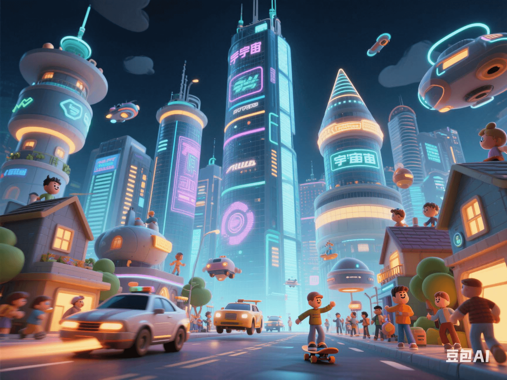

Metaverse Scam Investigation: Why Has a Trillion in Investment Become a 'Pixel Desert'?
PeaceLove.Top Insights :2025-04-19
24 Metaverse Scam Investigation: Why Has a Trillion in Investment Become a 'Pixel Desert'? 🌐💸
🌍 The Dream and Reality of the Metaverse
The metaverse was once regarded as the ultimate form of the future Internet. Its huge market potential and infinite imagination space attracted global capital and technological forces. Various virtual reality, augmented reality, and blockchain technologies were successively enhanced. Enterprises announced their entry into the'metaverse track' one after another, and investors flocked in, with billions of funds pouring in rapidly. However, several years have passed, and the once-glamorous 'virtual world' is now gradually revealing the true face of a 'pixel desert', and the sound of the bursting bubble is getting louder. 🛑 So, why hasn't the metaverse become the expected digital paradise? What kind of unbearable truths are hidden behind this global-scale technological adventure? 💭
🚀 The 'Golden Age' of the Metaverse: A Carnival of Technology and Capital
1. From virtual to real: The concept of the metaverse 💡
The metaverse, as an immersive virtual world that combines virtual reality (VR), augmented reality (AR), and blockchain technology, promises to provide a digital, cross-platform shared space. Whether it's socializing, shopping, working, or entertainment and education, all can be realized in it. 🤯 The initial concept of the metaverse was beautiful: people could have their own digital identities and assets in the virtual world and even engage in highly interactive activities with other users. Various tech giants invested huge amounts of money in metaverse-related technologies, content production, and infrastructure construction. 📊 However, as time passed, the path to realizing the metaverse turned out to be much more difficult than expected. Multiple factors such as technical bottlenecks, user participation, and market demand made the bubble in this field gradually emerge. 💥
🧩 The Bursting of the Metaverse Bubble: The Dilemma of the Virtual World
1. Technical bottlenecks: Where is the 'heart' of the virtual world? 💔
Although the metaverse has an exciting concept, it faces huge technical challenges. The penetration rate of VR and AR devices is still low, and they are expensive. Moreover, the performance of existing devices has not reached the standard for a truly immersive experience. 👓 In addition, the infrastructure required for the metaverse, such as network bandwidth, computing power, and data transmission speed, has not been fully built, resulting in a serious lag in the user experience. For example, in the virtual space, the smoothness, interactivity, and immersion are far from the ideal standards, causing many people's enthusiasm for the metaverse to gradually fade. ⚡
2. Lack of attractiveness: Why is the virtual world empty? 💀
On the other hand, the content construction of the metaverse has also failed to meet user needs. Most early metaverse projects relied on the creativity of players or developers, but the richness and diversity of the virtual world's content are far from comparable to those of the real world. Even the'metaverse giants' that have invested huge amounts of money cannot provide innovative experiences that are attractive enough to users. 😓 For example, the virtual spaces and goods provided by many platforms are often criticized as 'hollow' and 'boring'. Eventually, many investors found that the so-called virtual real estate and digital assets did not really have long-term value, and the market's enthusiasm gradually faded. 🚶♂️
💰 The 'Fever' and 'Withdrawal' of Capital: The Catalyst for the Metaverse Bubble
1. The capital greed behind a trillion-dollar investment 💸
The investment frenzy in the metaverse was largely driven by capital. A large amount of venture capital poured into this emerging field, and many enterprises and investors hoped to get a share in the future commercialization of the virtual world. 🚀 However, while the 'fever' of capital promoted technological innovation, it also exacerbated the formation of the market bubble. Many companies and projects exaggerated the potential of the metaverse without mature technical support, attracting a large amount of capital injection. 🤑 But as the technical bottlenecks were exposed, the expected return on investment continued to shrink, and the speed of capital withdrawal was also very fast. Many early investors began to rush to stop losses, resulting in the breakage of the capital chain of metaverse projects, and many virtual projects had to face closure or reorganization. 🏚️
2. 'Pixel desert': The hollowing-out of the virtual world 🌵
With the withdrawal of capital, many once-ambitious metaverse platforms began to fall into a state of 'hollowing-out'. Although some platforms still exist, user activity has dropped sharply, and the virtual world has become a 'pixel desert'. Users' willingness to participate is not high, and even some core developers have begun to abandon this field. 😕 This has led to over-inflation and over-speculation in the market. After the bubble burst, the value and actual influence of many metaverse projects almost归零, and the once 'virtual gold' has now become a 'digital wasteland'. 💔
🔮 The Future of the Metaverse: Will It Be a New Opportunity or a Permanent Regret?
1. Technological progress: Can it make a comeback? 🚀
Although the metaverse faces many problems, some tech giants and startups are still坚持研发. As technology gradually matures, such as the performance improvement of VR devices and the development of 5G and 6G networks, the future metaverse may break through the existing technical bottlenecks and truly achieve an immersive virtual experience. 💡 If technology can achieve a major breakthrough and user needs can be met, the metaverse may still have a chance to make a comeback and realize its original potential. 📈
2. Prudent investment: Avoid repeating the same mistakes 💡
For investors, the bursting of the metaverse bubble is an important warning: when facing emerging technologies, one must be cautious and avoid blind following. Although the metaverse may迎来 a second spring in the future, only those projects that truly solve technical bottlenecks and meet user needs are likely to stand firm in the future. 🧐
🚀 Conclusion: Where Will the Metaverse Go After the Bubble Bursts?
The bursting of the metaverse bubble is both the result of the over-inflation of technology and capital and the product of the gap between the market's premature expectations and reality. With the bursting of the bubble, more reflection and adjustment may give rise to new development paths. The metaverse is not an industry that can be achieved overnight, and the future is still full of challenges and opportunities. ⚡ We can only hope that the real combination of technological progress and user needs can bring a profound'rebirth' to the metaverse. The future virtual world may be more down-to-earth and truly change our way of life. 🌍💡